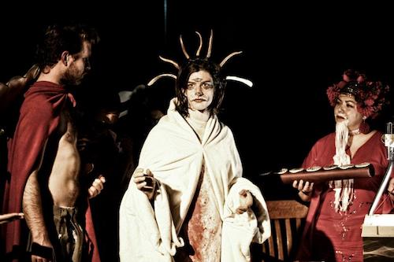

photo credit Emily Faith |
|
| photo credit Joe Tunis |
 photo credit probably nuuj |
|
|  still from LoopSpool (digital video) |
|  photo credit Annette Dragon |
|
|  photo credit Ted Forsyth |
 photo credit Chris Reeg |
|
|  photo credit r. nuuja 2013 |
photo credit Joe Tunis |
|
|  image credit Adam Arritola |
 video still |
|
|  |
 photo credit nuuj |
|
|  photo credit Al Brundage |
photo credit nilson carroll |
|
| still from "Pope It Up" |
photo credit Method Machine |
|
| image credit Chris Reeg |
 image credit r. nuuja |
|
|  photo credit erm |
photo credit r. nuuja |
|
| photo credit pls let me know if you took this photo |
 image credit Tara Nelson | |
|  photo credit erm |

BN PERFS (Rochester NY unless otherwise noted) /// 2024 Passover Kant's 300th Earth day, Psychic Garden /// Rug Raising for Psychic Seance, Psychic Garden /// Cancer Show, Psychic Garden /// 2023 Cameron's Birthday, Psychic Garden /// Corn King, Avon Corn Festival, Avon, NY /// They're Coming For Our Jobs (AI Show), MLK Jr. Memorial Park /// 2022 Burlesque Unwrap, Rochester Experimental Week, Spirit Room /// Pasta Puzzle (for Joel), Mendon Ponds /// Spa Day, Bug Jar /// 2021 Halloween Horror, Psychic Garden /// Teddy Bear Stuff (w/Joe Tunis), Joe+n, Court Street Bridge /// 2020 Games (for nilson), Small World Books /// 2019 Waves & Beams, Liquor Store /// Bloody Noes the Game (Video Installation), Swampbabes’ “Games for Windows”, Liquor Store /// LOOP SPOOL (Video), Broadcast on RCTV Public Access /// 2018 Tenth Anniversary Seminar, Visual Studies Workshop /// Space Opening Ceremony, Psychic Garden /// LOOP SPOOL World (Video Installation), “LOOPS”, Visual Studies Workshop /// 2017 Measures, Lydia Lunch Show, Photo City Music Hall /// 3 Heads & 7 Faces, Method Lab Revue, Geva NextStage /// Dada for Business, WAYO Play, WAYO FM Radio /// Origin Story, Horde House /// Parade, Rochester Biennial, Gallery R & Visual Studies Workshop /// Mind Control, Photo City Music Hall /// MEM Screening, Meddlesome Lab /// Economicus & Lawyer (Yule&Thule) meet Santa, Eastview Mall /// 2016 Nominations Process, Meddlesome Lab /// International Noise Conference, Bug Jar /// Necro-Wheel, Quintron Show, Bug Jar /// 9th Annual Santanalia Pageant [with friends], Visual Studies Workshop /// 2015 Bound, Finkbeiner House /// Easter Show, Skylark /// Santanalia (w/Joel Dow and John Gallo), MetalSome Art, Hungerford Building /// 2014 John W. Borek’s Hamlet, Multi-Use Community Cultural Center (MUCCC) /// Terror Prison [with friends], Flying Squirrel Community Center /// Officiants, Holcombe/Ackerman wedding /// MEM Screening, Fringe Festival, MUCCC /// 2013 Key Show, Performance Art Revue, Visual Studies Workshop /// Walking Thru the Graveyard, Left of Center Stage, Flying Squirrel Community Center /// The Opening, International Noise Conference, Visual Studies Workshop /// If Boys Wore the Skirts [with friends], Director/Writer/Performer, MUCCC /// Pope It Up, Pope John the Last, MUCCC /// Santanalia Sales Event, Krampus Trade Show, MUCCC /// 2012 Magician & Famulus, Left of Center Stage, Flying Squirrel Community Center /// Popcorn & Glass, Upstate Noise Conference, Powdermill Park /// Block Blessing, Guided Tour for Whose Streets? Our Streets, Rochester Contemporary Art Center /// Noise Band (w/City Harvest Black & Licker), Skylark /// Book of Revelation [with friends], Director/Writer/Performer, MUCCC /// Boy Band: BARF, (Performer with Ian, Joel, Brian, & Cameron), Carbon Records Anniversary Show, Monty’s Krown /// MBSNUT, Installation for “Whose Space? Our Space”, Rochester Contemporary Art Center /// 2011 Castration Fantasy, Experimenstrual Gorefest (Producer), Ellison Park /// Nikola Tesla Appreciation Show, Flying Squirrel /// Sandwich Salad (w/Handmade Orchestra), Village Gate /// Book of Revelation [with friends], MUCCC /// 4th Annual Santanalia Pageant [with friends], MUCCC & The Vault, Buffalo, NY /// 2010 Nun & Priest, Tunis Birthday Show, Bug Jar /// American Dream, MUCCC /// International Noise Conference, Dubland Underground /// Left of Center Stage, Flying Squirrel Community Center /// Calling Owls, Dow Family Farm /// 3rd Annual Santanalia Pageant [with friends], MUCCC /// Uterus Face the Musical [with friends], Flying Squirrel Community Center; Halloween Warehouse /// 2009 Vampire Night, Potential Life Studios /// Easter Show, Princess Palace /// Hypnotism Hip Hop, Anthill Collective & The Mez Cafe /// Twenty-First Birthday, The Mez Cafe /// Show #18, Meddlesome Manor /// HHH, 3 unique shows for the Buffalo Infringement Festival, Soundlab et al, Buffalo, NY /// Show #22, All Tumul’s Parties, Bug Jar /// American Dream, Wilmingtion Fringe Festival, Wilmington, DE /// American Dream, New Orleans Fringe Festival, New Orleans, LA /// American Dream, House of Yes, New York City, NY /// Rochester Ritual, Performance Art Competition, MUCCC /// 2nd Annual Santanalia Pageant [with friends], Boulder Coffee /// 2008 Gas Can Scam, The Mez Cafe & Metropolis Underground, Syracuse, NY /// First Annual Santanalia Celebration, Meddlesome Manor /// Show #8, No Radio Records, Ithaca, NY /// Show #7, Joe+N Day Tour, Cobbs Hill Park /// Show #6, Counterfeit Fest, Rochester Contemporary Art Center /// Shows #5 & #9, Bug Jar /// Show #2, International Noise Conference, Bug Jar /// Shows #1, #3 & #4, Pure Kona, The Mez Cafe ///